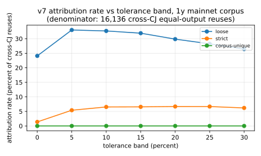
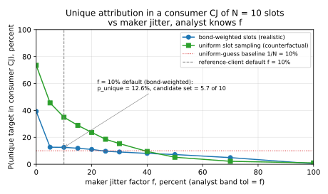

JoinMarket Maker Clustering and Taker Anonymity-Set Reduction
May 2026 (coinjoin-simulator + joinmarket-analyzer, v7.3 clusterer)
JoinMarket Maker Wallet Clustering and Taker Anonymity-Set Reduction
TL;DR. JoinMarket holds up well in practice. On one year of mainnet activity (10,581 CoinJoins), a passive observer using only on-chain data and the public offer feed trims the taker's average hide-set from 7.61 to 6.86 equal outputs per CoinJoin, a 9.8% reduction, and never wrongly merges two real wallets (precision = 1.0). Almost half of all CoinJoins (48.5%) leak no maker at all; only 0.22% collapse to the taker alone. The one signal that does most of the damage is the fee fingerprint: a maker's fee is a fixed function of its advertised offer, so when the same maker shows up in a later CoinJoin the fee it charges often points back to exactly which output it produced earlier. The practical fix is taker-side fee quantization: takers round every maker's fee in their round up to the nearest step on a small public grid (opt-out), so makers on nearby offers become indistinguishable. The asymptotic ideal is full fee homogenization (every maker on the same offer), which our simulator confirms drives the residual back to the full hide-set (§9). The protocol is robust today and improvable.
A two-CoinJoin example first
Before any of the machinery, here is the whole attack in two transactions. This worked example is the clearest way into the result; everything after it is detail.
A JoinMarket CoinJoin mixes coins from one taker (the person paying for privacy) and several makers (liquidity providers who earn a fee). Everyone contributes inputs and everyone gets back one equal output of the same round amount, plus a change output for the leftover. The taker's privacy comes from hiding among the equal outputs: an observer sees N identical outputs and cannot tell which one is the taker's.
Two facts about how the maker software moves coins drive the attack:
- A maker's change output goes back to the same wallet bucket (mixdepth) the inputs came from, so it tends to be reused as an input by that same maker later. Following that reuse links the maker's appearances across CoinJoins. (JoinMarket wallets keep funds in five buckets numbered 0-4.)
- A maker's fee is a deterministic function of its advertised offer. A maker advertising "0.1% of the amount" always charges 0.1%; a maker advertising "800 sats flat" always charges 800 sats. The fee is paid out of the maker's own coins (it shows up as a slightly larger change output, not as a separate output), and the integer-precision arithmetic is recoverable from the transaction.
Now the example. Maker A advertises 0.1% of the amount. Maker B advertises a flat 800 sats. They appear together in two consecutive CoinJoins:
- CoinJoin T, round amount 1,000,000 sats. A charges
0.1% * 1,000,000 = 1,000 sats; B charges its flat800 sats. - CoinJoin S, round amount 1,500,000 sats. A would charge
0.1% * 1,500,000 = 1,500 sats; B would still charge800 sats.
In CoinJoin T, an observer sees three identical 1,000,000-sat equal outputs and cannot say which belongs to A and which to B. The equal outputs are anonymous by amount.
But A's equal output later gets spent as an input of A's slot in CoinJoin S (this is the natural reuse described above). The observer can read A's realized fee in S: it is 1,500 sats. Only A could have charged 1,500 sats at S's amount (B's policy gives 800 sats). So the observer concludes: the slot in S that reused this output is A, and therefore the equal output it spent in T was A's. One of T's anonymous outputs has been deanonymized, and the taker's hide-set in T shrinks by one.
That is the fee fingerprint. It only works because A's fee and B's fee come out different at the consumer round's amount. If A and B advertised the same offer, both would charge the same fee and the observer could not tell them apart. That is exactly why the fix is to make fees collide on purpose (§9).
The rest of this paper measures how often this fires on mainnet (answer: 22.8% of cross-CoinJoin reuses, dropping the average hide-set by ~0.75), proves the clustering never merges two real wallets, and evaluates the fix in a simulator.
Glossary
| term | plain meaning |
|---|---|
| taker | the user paying for a mix in a given round |
| maker | a liquidity provider who joins for a fee |
| equal output | one of the N identical-amount outputs of a CoinJoin; the taker hides among them |
| change output | a participant's leftover coins, returned to the same wallet bucket the inputs came from |
| slot | one participant's contribution to one CoinJoin (their inputs + one equal output + at most one change output) |
| mixdepth | one of the five wallet buckets (0-4) a JoinMarket wallet keeps funds in |
| offer / fee policy | a maker's advertised price: either relative (a % of the amount) or absolute (a flat sat amount) |
| fee fingerprint | the maker's realized fee, recoverable on-chain, used to tell which slot produced an output |
| anonymity set / hide-set | the number of equal outputs the taker is indistinguishable among (N per round) |
| residual | the hide-set that survives the attack (lower is worse for the user) |
| cluster | a set of slots the attack proves belong to the same maker wallet |
| ILP | the integer program we solve per CoinJoin to recover who contributed which inputs and change |
| precision = 1.0 | every link the attack makes is a certainty, never a guess |
| CIOH | common-input-ownership heuristic: inputs spent together usually share an owner |
1. What this paper studies
A JoinMarket CoinJoin has one taker and M makers; it produces N = M + 1 equal outputs and up to N change outputs. The taker's advertised privacy is that its equal output is one of N indistinguishable candidates.
JoinMarket protects that hide-set in layered ways: everyone runs the same wallet and keeps funds in five mixdepths; makers advertise offers over a Tor directory-node overlay under randomized session nicknames, usually backed by a fidelity bond (a timelocked UTXO the maker proves it controls, BIP-0046); and the taker's identity does not by itself reveal which equal output it owns.
This paper asks what a passive observer can still learn from public data alone, and answers three questions:
- How many maker wallets can be clustered from on-chain data, at precision = 1.0?
- By how much does that shrink the taker's per-round hide-set, once we restrict to evidence that can actually name an individual equal output (the fee fingerprint, plus a few co-spend cases)?
- Are the clusters correct against independent ground truth (an active probing campaign that collected real maker wallet-to-nickname bindings)?
A clarification on the headline, since it is easy to misread: the 9.8% figure is an average reduction in the size of the hide-set, not a claim that ~half of all CoinJoins are broken. About half of CoinJoins (51.5%) leak at least one maker, which usually still leaves the taker hidden among several others. Only 0.22% of CoinJoins lose enough makers to expose the taker outright.
2. Threat model
A passive on-chain observer with:
- a snapshot of JoinMarket CoinJoins, found by crawling forward and backward from known addresses (covering mainnet through May 2026; ~24k CoinJoins back to mid-2021, but heavily concentrated in the last ~14 months);
- the public maker offer feed. Makers publish offers to directory nodes, and anyone can run a watcher that records the current order book (one public snapshot is joinmarket-ng.sgn.space/orderbook.json, but the data is not tied to any single host);
- the ability to solve a small integer program per CoinJoin (under 30 inputs);
- a few CPU-hours (the full corpus pass runs in under 15 minutes on 14 cores).
The observer does not join any CoinJoin and controls no maker. We did run a small, good-faith probing campaign in late April 2026 (three rounds, 72 maker nicknames) used only as a ground-truth check (§6.2); it contributes nothing to the clustering itself, and we publish only per-nickname UTXO counts and collision outcomes, never the underlying addresses or bond UTXOs.
3. The three protocol facts the attack uses
- One slot per participant. Each taker/maker contributes exactly one slot. Its inputs all come from one mixdepth
d; its equal output advances to mixdepthd+1 (mod 5); its change stays in mixdepthd. - Change is sticky (same mixdepth). Because change returns to mixdepth
d, it is eligible to be a future input of the same maker the next time that maker spends fromd. When a later CoinJoin's slot is built from inputs that exactly include this change UTXO, the two slots are the same wallet by construction. This is the change-chain link. - The equal output advances and gets reused. The equal output lands in mixdepth
d+1. Makers usually spend from whichever mixdepth holds the most coins, which after a round is often (not always) the one that just received the equal output. When the equal output is reused as an input later, that reuse is the equal-chain link, but on its own it cannot say which of the round's identical equal outputs was reused. The fee fingerprint (§5.2) is what resolves that ambiguity, as shown in the example above.
Two smaller facts: a maker's offer is either relative or absolute, not both; and the maker's contribution to the miner fee is 0 in the default policy and across the observed corpus.
The attack treats fact 1 as a must-not-link (two slots of the same CoinJoin are never the same wallet), fact 2 as a must-link, and fact 3 (via the fee fingerprint) as the only signal that names an individual equal output. Fees are used only locally, to pick one slot inside one CoinJoin, never to pool makers globally by their advertised price. Because every link is a protocol certainty, the clusterer can only ever under-cluster, so precision = 1.0 by construction.
3.1 The example, in protocol terms
A two-maker CoinJoin at amount 1,000,000 sats, taker plus makers A and B, each charging a 1,000-sat fee, miner fee 4,000 sats paid by the taker:
inputs (total 4,480,000):
taker: 2,400,000
A: 1,050,000 (from A's mixdepth 1)
B: 950,000 + 80,000 (from B's mixdepth 0)
outputs (total 4,476,000; miner fee = 4,000):
equal: 1,000,000 x3 (taker, A, B, in unknown order)
change(taker): 1,394,000
change(A): 51,000 = 1,050,000 - 1,000,000 + 1,000 fee
change(B): 31,000 = 1,030,000 - 1,000,000 + 1,000 feeEach maker earns +1,000 sats (its fee shows up inside its change output, not as a separate output, which is a common point of confusion). The integer program tells us which inputs and which change belong to each slot; it cannot tell which equal output is whose. A's change (mixdepth 1) and B's change (mixdepth 0) will each reappear as a future input, giving the change-chain link. A's equal output advances to mixdepth 2, B's to mixdepth 1; when one is reused later, the fee charged in that later round names its producer, exactly as in the opening example.
In real JoinMarket, the yg-privacyenhanced maker script applies a +/-10% jitter to its advertised fee, but only when it re-publishes its offer. Re-publishing happens occasionally (for instance when the maker's spendable balance shifts), not between every pair of rounds, so two consecutive rounds by the same maker often carry the same fee, which strengthens the fingerprint. The base yg-basic applies no jitter at all. The jitter narrows but does not eliminate the unique-match condition: Appendix B shows the default +/-10% still leaves the maker uniquely identifiable in 12.6% of cases (vs a 10% random-guess baseline), and defeating the fingerprint by jitter alone needs an impractically wide range.
4. Mainnet corpus
One year of mainnet JoinMarket activity, block heights 894,697 to 947,358 (2025-05-01 to 2026-05-01):
| metric | count |
|---|---|
| JM CoinJoin txs in window | 10,581 |
| fully decoded by the integer program | 6,315 (59.7%) |
| not fully decoded at the chosen budget | 4,266 (40.3%) |
| of those, partial maker slots recovered (§7.4) | 4,219 (98.9%) |
| undecodable (no slots at all) | 47 (0.4%) |
| maker slots, total | 68,718 |
A "full decode" means a unique slot-by-slot solution where every slot's recovered fee is non-negative and the round's fee budget is respected. When the full solve times out (2s budget) or is ambiguous, a cheap greedy pass still recovers the slots that are forced (§7.4). CoinJoins that decode to nothing contribute no links, which is conservative: it can only over-report surviving anonymity.
The fee budget (max 0.5% relative, max 10,000 sats absolute) matches the observed maker population (the order book's realized maxima are 0.4% and 9,644 sats), tightly bounding the realistic policy space. A looser budget would admit spurious decodes and hide the fee fingerprint.
5. The clusterer
The clusterer takes the per-CoinJoin slot decomposition and merges slots across CoinJoins using protocol-forced links only. It is a union-find with must-link and must-not-link constraints. We describe it in incremental versions; each one only adds links to the previous one and preserves precision = 1.0.
| version | new link |
|---|---|
| v6 | within-CoinJoin must-not-link; change-chain must-link |
| v7 | fee-fingerprint equal-output attribution (§5.2) |
| v7.1 | co-spend across change UTXOs in a non-CoinJoin tx (CIOH) |
| v7.2 | non-CoinJoin round-trip CIOH |
| v7.3 | fidelity-bond funding-tx CIOH |
Headline numbers use v7.3 (the strictest). Because every merge is a protocol consequence, the clusterer never over-merges; it only fails to find links when the relevant CoinJoin is missing from the corpus. So precision is 1.0 and recall is bounded by how much of the network the corpus captures.
5.1 Cluster sizes
The full pass over 68,718 slots produces:
| metric | v7.3 |
|---|---|
| total clusters | 20,454 |
| singletons | 11,272 |
| non-trivial (size >= 2) | 9,182 |
| largest cluster | 388 slots |
| same-CoinJoin collisions (precision violations) | 0 |
The zero-collision row is the falsifiability check: two slots of the same CoinJoin in one cluster would be a hard error. Every version passes it.

The distribution is heavy-tailed but bounded (median non-trivial cluster is 3, largest is 388). There is no giant cluster of thousands of slots, which would signal over-merging.
5.2 v7: the fee fingerprint
A maker's realized fee is a fixed function of its offer and the round amount a:
using banker's rounding to the satoshi, matching JoinMarket-NG's Decimal(cjfee) * Decimal(amount) in jmcore/src/jmcore/bitcoin.py (and the equivalent in joinmarket-clientserver). The integer program recovers this fee per slot.
The fee alone is not identifying (thousands of slots share a policy). v7 uses it locally. When an equal output of producer CoinJoin T is spent in a later CoinJoin S, the consumer slot's fee f_c at amount a_S is read off. We then check T's own slots: is there exactly one slot whose offer would produce f_c at a_S? We test two interpretations (the consumer is absolute, or relative, comparing in exact integer parts-per-million so no floating-point error creeps in). This is exactly the A-vs-B test from the opening example.
v7 has three gate strengths:
- loose (per-CoinJoin unique under absolute or relative): the original gate; an edge fires when exactly one slot matches and the two interpretations do not disagree. Headline numbers use this gate.
- strict (both interpretations agree on the same slot): rejects single-criterion coincidences.
- corpus-unique: the chosen slot's fingerprint must be unique across the entire corpus. This is what restores precision = 1.0 in the adversarial-jitter simulator (§6.1); on the real corpus it returns zero edges, because real fee diversity is not high enough for any slot to be globally unique, so it is usable only as a precision filter on top of the loose gate.
On the full mainnet crawl (32,430 cross-CoinJoin equal-output reuses) under the loose gate:
| disposition | count | share |
|---|---|---|
| edge added (unique under abs OR rel) | 7,361 | 22.7% |
| ambiguous (>= 2 slots match) | 2,714 | 8.4% |
| interpretations disagree (dropped) | 113 | 0.3% |
| no slot matches | 22,242 | 68.6% |

The large no-match share is mostly reuses whose producer CoinJoin is missing or undecoded. The 113 conflicts are dropped on purpose: dropping them is what keeps precision at 1.0. v7 inherits v6's within-CoinJoin must-not-link, so none of these 7,361 merges can sneak in a same-CoinJoin violation (verified: 0 collisions in §5.1, 0 cross-nickname collisions in §6.2).
5.3 v7.1: co-spend (CIOH)
If a non-CoinJoin transaction spends two change UTXOs belonging to different maker slots, those slots share an owner (common-input ownership). To stay at precision 1.0 we require the spender to have at most two outputs (a consolidation or simple send), excluding batched multi-recipient spends. On mainnet: 44 qualifying spenders, 95 cross-CoinJoin merges, 0 same-CoinJoin pairs.
5.4 v7.2: round-trip co-spend
Many remixes pass through one non-CoinJoin hop: a maker spends its change, passes it through a two-output hop transaction, and one output later funds a maker slot. v7.2 links producer to consumer across such a hop. On mainnet: 70 qualifying hops, 103 merges.
5.5 v7.3: fidelity-bond funding
The offer feed publishes each maker's fidelity-bond UTXO in cleartext. The bond itself is rarely spent, but the transaction that created it is a normal spend whose inputs share the bond owner's wallet (CIOH). v7.3 anchors slots to a known bond owner two ways: backward (an input of the funding tx that is also a maker's change belongs to that owner) and strict-forward (if the funding tx has at most two outputs, the non-bond output is the owner's change; if it later funds a slot, that slot is the owner's). Funding txs that are themselves CoinJoins are skipped.
How are bonds funded? Of 95 bonds in a 2026-05-22 snapshot, 66 (69%) are funded entirely from inputs with no visible JoinMarket history (cold storage, exchange withdrawals, fresh wallets), so they leak nothing. The 17 mixed-funding bonds are the ones that leak a same-wallet edge. On mainnet v7.3 adds only 9 merges. Its value is qualitative: it shows the public offer feed alone widens a precision-safe wallet boundary with no probing needed.
6. Ground-truth validation
We validate v6 through v7.3 against three independent ground-truth sources a passive observer would not normally have.
6.1 Simulator and the gate hierarchy
The simulator runs the same pipeline on a synthetic network in two regimes (every maker on the default offer; or makers drawing varied offers with ~10% jitter) and three observation modes (full labels; fee-fingerprint-only "blinded"; fingerprint-and-must-not-link-only "torture"). The point is to separate two questions: is the per-round test sound, and does the corpus carry enough fee diversity for soundness to matter?
Findings:
- Uniform regime: v7 never fires. When every maker advertises the same offer, no slot is uniquely identifiable by fee, so v7 collapses to v6 and the fee channel correctly goes silent. This is the counterfactual the fix relies on. Note that v6's change-chain still reconstructs operator-level wallets even with the fee channel disabled, so fee homogenization removes the worst signal but is necessary, not sufficient: it does not hide that two slots are the same wallet, only which equal output each produced. The user-facing hide-set reduction, however, comes entirely from the fee channel, which homogenization shuts.
- Varied regime, loose gate: under jitter, 2.9% of clusters pick up a precision violation (a jittered fee colliding with another maker's policy). The strict gate cuts this but does not eliminate it.
- Corpus-unique gate eliminates violations entirely at ~5% recall cost. In the torture regime it produces no edges, which is the correct behavior when fees carry no signal.
So: under realistic fee distributions all gates report zero violations (the probe set confirms 0 cross-nickname collisions across all gates); under adversarial jitter the per-round gate can break while corpus-unique holds. Mainnet headlines use the loose gate because the empirical violation rate is 0 and the recall gain is real; an adversarial-jitter setting should prefer corpus-unique. Appendix A covers a tolerance band for the case where jitter does fire between rounds.
6.2 Active probing of real makers
In late April 2026 we probed the live order book in three rounds (72 distinct nicknames that authenticated with a real PoDLE commitment), recording the UTXOs each nickname offered. Two UTXOs from the same nickname in one round are the same mixdepth of the same wallet, because the same bond key authenticates both.
| metric | v6 | v7 through v7.3 |
|---|---|---|
| nicknames probed | 72 | 72 |
| nicknames with >= 1 match | 16 | 35 |
| offered UTXOs found in a cluster | 19 | 40 |
| cross-nickname collisions in any cluster | 0 | 0 |

The pass/fail check: for every pair of distinct probed nicknames, no cluster contains a UTXO from both. We observe zero such collisions under all five versions. Every probed nickname whose UTXOs appear in the clusters has all of them in clusters that belong only to that nickname. The unmatched 37 nicknames simply never entered an observed CoinJoin in our corpus; they are not failures. Three independent precision checks (by construction, the within-CoinJoin structural check, and this probing oracle) all converge on precision = 1.0.
7. Anonymity-set reduction
For each decoded CoinJoin T the taker hides among N = M + 1 equal outputs. The hide-set only shrinks when a specific equal output is attributed to a specific maker. We call a producer slot certified when one of two paths holds:
- Path A (fee fingerprint). Its equal output is reused in a later CoinJoin and the fee fingerprint (§5.2) names it uniquely. This is the only edge that ties an equal output to a specific producer slot, and it is the mechanism in the opening example.
- Path B (cluster co-spend). A later slot spends the equal output alongside a change output from the same cluster, with no rival cluster anchored. A small downstream confirmation on top of Path A.
Just clustering slots together (change-chain, CIOH, bond-funding) is not certification: it proves two slots share a wallet, but does not say which equal output in T belongs to which slot.
The surviving hide-set for round T is k(T) = N(T) - (certified slots in T). The taker is never certified (we have no chain evidence of who the taker is), so the minimum is 1. The reported k(T) is a lower bound.
7.1 Headline
Across the 10,368 analyzed CoinJoins in the window (6,315 full decodes + 4,053 with partial slots):
| metric | v6 (change-chain only) | v7 (Path A) | v7.3 (final) |
|---|---|---|---|
| mean published N | 7.61 | 7.61 | 7.61 |
| mean certified makers per CoinJoin | 0.01 | 0.75 | 0.75 |
| mean residual hide-set | 7.60 | 6.86 | 6.86 |
| share of CoinJoins with >= 1 certified maker | 1.4% | 51.5% | 51.5% |
| median residual hide-set | 8 | 7 | 7 |
| share reaching residual = 1 (taker alone) | 0.0% | 0.22% | 0.22% |
| Path A attribution edges | 0 | 7,474 | 7,474 |
| Path-B-only credits | 150 | 609 | 609 |

The change-chain (v6) clusters maker slots extensively but, on its own, names almost no equal outputs. Adding the fee fingerprint (v7) attributes 7,474 of the 32,801 cross-CoinJoin reuses in the window (22.8%) and lifts the share of CoinJoins leaking a maker from 1.4% to 51.5%. The mean hide-set drops 7.61 -> 6.86 (9.8%), and 23 CoinJoins (0.22%) collapse to the taker. v7.1-v7.3 add 152 more cluster merges but no measurable hide-set movement: the cluster graph supplies the partition (which slots are the same wallet); the fee fingerprint supplies the attribution (which output came from which slot). The fingerprint is where the user-facing damage lives.
7.2 Per-round-size breakdown

The reduction holds across every round size from N = 3 to N = 17: about one candidate lost on average, roughly constant in absolute terms, so larger rounds keep proportionally more privacy.
7.3 What drives the surviving hide-set
Two structural sources: the true taker (always one, never certified), and makers whose equal output is not uniquely fingerprinted. Two things would shrink the residual further under the same threat model: a larger crawl / bigger decode budget (more reuses observable), and greater fee-policy diversity (each distinct policy is shared by fewer makers, so a fee more often pins one slot). Makers on the default policy are less attackable here, because their fingerprint collides with every other default-policy maker, which is precisely the property the fix generalizes.
7.4 Partial-slot recovery
For the 4,266 CoinJoins without a full decode, a greedy preprocessing pass (joinmarket_analyzer.greedy.greedy_preprocessing) locks in the forced input-to-change pairings (where the fee equation admits exactly one compatible change, and that change is compatible with exactly one input). This recovers 21,621 partial slots from 4,219 CoinJoins (98.9%), sound whether or not a full solve would have converged. Merging full + partial gives the headline 7.61 -> 6.86. On full-decodes only the figures are 8.46 -> 8.12; partial CoinJoins skew larger (the solver fails more on wide rounds), so they lower mean N while adding attribution edges.
8. Role-change exposure (brief)
A taker who later acts as a maker can leak its cross-round identity: if one of its equal outputs from T is reused by its later maker slot and the fee fingerprint attributes it back, that producer slot of T is identified as the taker. In the corpus this is a strict subset of the 7,474 Path A edges and at most a few hundred CoinJoins. We note it for completeness; the §7 reduction is the stronger result because it applies to every CoinJoin regardless of role changes.
9. Countermeasures
The whole user-facing reduction rests on one load-bearing edge: the fee fingerprint (Path A). The clustering edges (change-chain, CIOH, bond-funding) group slots into wallets but cannot name an individual equal output. Close Path A and the residual returns to the full hide-set minus a small Path B contribution.
The deployable fix is taker-side fee quantization. A taker can round every maker's fee in its round up to the nearest step on a small, public grid (an opt-out default in the taker client). Makers whose offers fall in the same grid cell then receive the same realized fee in that round and become indistinguishable, collapsing the within-round fingerprint without requiring any maker to change its advertised offer. This is enforceable by the taker alone (the taker sets the realized fees, subject to each maker's advertised minimum), and it is the practical, incrementally-deployable form of the defense.
The asymptotic ideal is full fee homogenization: if every maker advertised the same offer, the fingerprint would never disambiguate anyone. Quantization approximates this within each round; full homogenization achieves it network-wide. The simulator below measures the homogenization limit directly (it is the cleanest knob to model), and quantization to a fine grid converges to the same result as the grid coarsens.
One subtlety: quantizing only your own round is not a complete unilateral fix. The same makers also serve other takers' rounds under their actual offers, and the fingerprint can be reconstructed from those rounds. The closer the grid is to a single network-wide cell (i.e. the closer to full homogenization), the less any single round leaks.
9.1 What an observer actually sees, ranked
- Fee fingerprint (Path A). The only edge that labels an equal output. Suppressing it alone moves the residual to the full hide-set (§9.3). 7,474 of the 8,083 certifications in the corpus (92.5%) come from here.
- Cluster co-spend (Path B). Only 609 extra certifications.
- Change reuse (v6). Clusters slots; contributes only the indirect Path B credits. Structurally unavoidable as JoinMarket is deployed.
- CIOH and bond-funding (v7.1-v7.3). Widen wallet boundaries; 0 additional credits in practice on this corpus.
9.2 What does not work, and why
- Consolidating change before the next round. Collapses your own UTXOs into one cluster, which is the attack's premise; does not touch Path A.
- Refusing to spend change as a CoinJoin input. Closes the v6 edge and some Path B but not Path A, and is counterproductive: it forces makers to spend equal outputs more aggressively, increasing the Path A surface (the simulator's
no_change_as_input+maker_only_cjvariant lands at residual 4.04, worse than the 4.51 baseline, with 24,133 Path A edges vs 8,982). - Using a JoinMarket-disjoint bond wallet. 66 of 95 bonds already do; it closes the bond-funding edge but the bond is still published alongside the maker's offer, so the observer still ties it to the nickname and to every slot Path A attributes. Useful only combined with anonymous bond advertisement and fee flattening.
- Batching non-CoinJoin spends into >= 3 outputs. Defeats the specific CIOH heuristics here but the underlying inference survives an adapted heuristic; it raises the observer's cost, not the channel's existence.
- Running over Tor. Already standard and correct hygiene, but the entire attack runs on public chain data, so no network-level measure affects it.
9.3 Simulator evaluation
We enumerate the 8 configurations over three knobs: uniform_fee (every maker on the default offer, the homogenization limit), no_change_as_input, and maker_only_cj (a periodic synthetic CoinJoin recycling held-back change). 150 seed makers, 5 batches of 4,000 takers, 10% churn, 5 makers per round, the wide mainnet fee grid. Precision is 1.0 in every variant.
| variant | N | certified | residual | share res=1 | share any cert | Path A | Path B |
|---|---|---|---|---|---|---|---|
uniform_fee | 5.00 | 0.00 | 5.00 | 0.00% | 0.00% | 0 | 0 |
uniform_fee + maker_only_cj | 5.00 | 0.00 | 5.00 | 0.00% | 0.00% | 0 | 0 |
uniform_fee + no_change_as_input | 5.00 | 0.95 | 4.05 | 0.66% | 65.43% | 717 | 0 |
uniform_fee + both | 5.00 | 0.68 | 4.32 | 0.36% | 45.99% | 16,970 | 0 |
| baseline (today's JM) | 5.00 | 0.49 | 4.51 | 0.03% | 38.35% | 8,982 | 794 |
maker_only_cj | 5.00 | 0.49 | 4.51 | 0.03% | 38.35% | 8,982 | 794 |
no_change_as_input | 5.00 | 0.45 | 4.55 | 0.13% | 34.09% | 339 | 0 |
no_change_as_input + maker_only_cj | 5.00 | 0.96 | 4.04 | 0.82% | 59.98% | 24,133 | 0 |

Observations:
- Fee flattening is the only effective defense.
uniform_fee(the homogenization limit, which taker-side quantization approximates) is the only knob that drives the residual to the full hide-set with zero Path A attributions. Pairing it withmaker_only_cjdoes not change that. no_change_as_inputis counterproductive, as above: it removes a clustering edge without touching the fingerprint and forces more equal-output spending.uniform_fee+no_change_as_inputis also counterproductive: a few residual fee differences (different slot amounts) interact badly with aggressive equal-output spending. The clean defense is fee flattening alone.- Throughput is preserved under
uniform_fee; the throughput-risky knob isno_change_as_input(makers run out of spendable change).
Three defensible deployment positions:
- Today: residual 4.51 in simulator, 6.86 on mainnet; 0.22% of mainnet CoinJoins reach residual 1.
- Taker-side fee quantization (recommended, opt-out default): pushes the residual toward the full hide-set as the grid tightens, deployable by takers without maker cooperation.
- Network-wide fee homogenization: the limit case; reaches the full hide-set with zero Path A, but needs broad adoption.
Caveats: the simulator does not model non-CoinJoin maker spends (so the CIOH/bond edges cannot fire) or an adaptive order-book-probing adversary; on mainnet those edges add no Path B credits, so the relative ordering across countermeasures still matches the live attack.
10. Limitations
A finite crawl and a 2s decode budget (40.3% of CoinJoins not fully decoded, though §7.4 recovers slots from 98.9% of them); the per-round gate admits a small fraction of false edges under adversarial jitter (fixed by the corpus-unique gate at ~5% recall cost); the CIOH edges abstain on >= 3-output spends; recent CoinJoins near the crawl horizon look more singleton than they are, biasing the residual slightly upward for the last quarter. None of these change the conclusion: the reduction is bounded, the clusterer never over-merges on this corpus, and the fee fingerprint drives the attack.
11. Conclusion
JoinMarket's per-round hide-set is largely realized in practice. Against a passive observer running a precision-1.0 clusterer, the published mean of 7.61 contracts only to 6.86 (a 9.8% reduction over 10,368 CoinJoins). Almost half of all CoinJoins lose no candidate; 0.22% collapse to the taker. The structural channel that does the work is the fee fingerprint: a maker's fee is a fixed function of its offer, so a reused equal output's later fee names its producer. It has a known mitigation, taker-side fee quantization (with full fee homogenization as the limit), that is deployable as an opt-out client default and reaches the full hide-set as the fee grid tightens.
Precision = 1.0 is what makes this actionable: every certified maker is a deterministic hide-set reduction, validated three ways. Behavioral half-measures (no_change_as_input, maker_only_cj) are at best neutral and at worst counterproductive, because they touch the clustering edges without touching the fingerprint. JoinMarket is robust today and hardenable by a coordinated client-default change that flattens realized maker fees, with no protocol-level cryptographic addition required.
Appendix A. Tolerant fee-fingerprint matching
The v7 gate uses exact integer equality. The reference clientserver supports +/-10% per-announcement jitter (cjfee_factor), but only in yg-privacyenhanced (the base yg-basic ignores it) and only when the maker re-publishes its offer (an event triggered by an unrelated balance shift, restart, or schedule), so it is not guaranteed between two consecutive rounds. The newer jm-ng enables jitter by default, but it is recent and our corpus is dominated by clientserver-era CoinJoins. An opt-in tolerance band t (default 0) lets the observer recover same-maker matches that exact equality misses when jitter does fire.

On the corpus, the loose-gate edge count peaks at t = 0.05 (33% of reuses, vs 24% at t = 0) then declines as wider bands induce more per-round ambiguity. The strict gate gains a ~5x recall lift (1.4% to ~6.7% at t in [0.15, 0.20]). The corpus-unique gate returns zero edges at any tolerance (no slot is globally unique), so it works only as a precision filter on the loose gate. Default t = 0 is the right operating point for the loose gate.
Appendix B. Is the existing fee randomization enough?
The real question is not "can the observer place a maker among all order-book offers?" but "knowing the maker's fee in producer CoinJoin T, can the observer pick its slot out of the N slots of the consumer CoinJoin S?". The competitive set has size N, not the whole order book, because only S's few slots ever compete with the target.
We simulate this directly: round amounts from the empirical 1y distribution, N = 10 slots of S sampled from the live order book (65 bonded relative offers, 41 distinct policies), under both bond-weighted sampling (realistic) and uniform sampling. Each realized fee carries jitter j uniform in [1-f, 1+f].

At f = 0 the target is uniquely identified in 39% of CoinJoins under bond-weighted sampling (74% under uniform). The gap is the whole story: 94.5% of the bond weight sits in 10 makers, and 5 of those advertise policies near 0.4% within a 1.22x ratio, so the draw often picks several effectively-identical makers and the observer cannot disambiguate them even without jitter. This is the same quantization effect the fix generalizes.
At the default f = 0.10, unique attribution drops to 12.6% (vs a 10% random-guess baseline); the observer's expected candidate set in S is 5.7 of 10. Bringing it below random-guess needs f >= 0.25 (bond-weighted) or f >= 0.40 (uniform); reducing it to ~0.4% needs f >= 1.0, where the jitter's lower edge touches zero. The lesson: the property that already weakens the fingerprint is fee clustering among high-bond makers; the +/-10% jitter rides on top of it rather than providing it. Extending that clustering to all makers (via quantization, or in the limit homogenization) removes the fingerprint as a deanonymization primitive. Fee randomization alone is not sufficient.